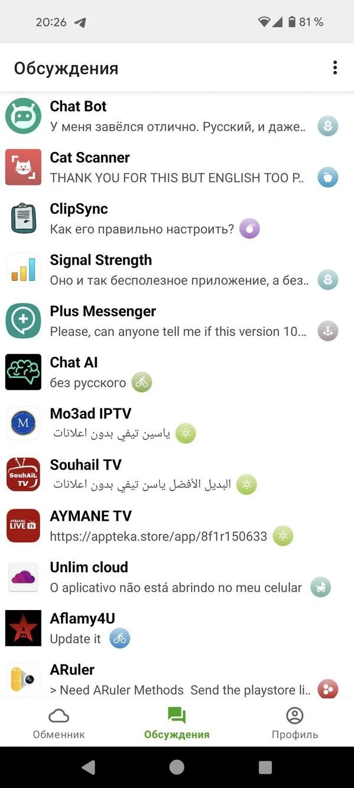

Appteka 深度盘点：这个轻量应用市场的能力边界在哪里
从安装权限到社区聊天，从权限解读到开发者直连——Appteka 把 Google Play 里缺失的几件事补齐了，我们来系统性梳理它到底能干嘛、短板在哪。
Google Play 称霸 Android 生态十多年，但它的问题也越来越明显：评论区被刷分淹没、开发者联系方式只剩一个 support 邮箱、权限信息被折叠得看不到全貌、想找个小众工具翻几页广告就累了。Appteka 就是在这个背景下做的——它不是另一个"更大的应用市场"，而是一个更轻、更透明、社区感更强的补充——去appteka官网看一眼就能体会到这种克制。今天我们就把它的能力面完整铺开，看看这个平台到底能帮到谁、又有哪些绕不开的局限。

安装与权限：把"每应用独立授权"这件事讲清楚了
先从appteka下载拿到 APK，装之前先了解一件事——Android 从 Oreo （8.0）开始有一条对普通用户不友好的机制——每应用独立授权。任何一个应用要触发 APK 安装，必须单独获得「允许来自未知来源的安装」权限。你用 Chrome 下载 APK，Chrome 需要开；用 Edge 下，Edge 也要开；Appteka 自己作为安装器，也得开一次。
这个机制本身是好的——防止恶意应用悄悄装 APK——但问题在于几乎所有第三方安装器都没把这件事给用户讲明白。Appteka 第一次触发安装时，会直接跳到 Android 设置页的对应开关，而不是让你去"安全设置"里翻半天。对老用户来说这是一次性的事，对新用户来说这是必须过的第一道门槛。
权限管理方面，Appteka 详情页的权限列表做得比 Google Play 直白得多。Google Play 会把同类权限合并成一个模糊的描述，Appteka 则逐条列出来、按分类归档：存储、网络、账户和同步、通知、其他。一个手电筒应用申请了联系人读取？在 Appteka 上你一眼就能看到这行，而不是被 Google Play 的合并描述给蒙混过去。
当然 Appteka 也有自己的安全扫描——三引擎联合：ClamAV 查已知病毒、APKiD 查加壳情况、Quark-Engine 查可疑行为模式。但要明确一点：扫描只负责 APK 本身的恶意 payload，不负责判断权限是否合理。一个写得干干净净但申请了过多权限的 APK，扫描照样会过。所以权限列表那一行必须你自己过眼，Appteka 只展示、不替你做决定。想进一步了解权限分类和安全扫描的技术细节，可以翻翻appteka文档里的完整说明。
详情页与社区真实度：刷分成本高不等于没有刷分
Google Play 的评论区已经成了刷分灰色产业的重灾区。热门应用的 5 星评论里混着机器人软文，3 星以下的差评可能被算法压到翻几页都看不到。Appteka 的社区规模比 Google Play 小几个数量级，这件事反而成了它的优势。
刷分在 Appteka 上成本高得多——没有规模化刷分服务专门针对这个平台，因为 ROI 不划算。开发者会直接回复评论，因为社区小，他们每天能看到自己应用下的每一条反馈。差评也不会被刻意压低，算法不会做那种"把好评论顶上去、把差评论藏起来"的操作。
但硬币总有两面。热门应用的评分总数可能才几百条，统计显著性不如 Google Play 动辄上万的基数；新上传的应用基本没评论——没人试自然没人评。看评分有一个通用判断法：优先看评论数 ≥ 50 条的应用，评论数太少就当成全新应用看待。5.0 分但只有 3 个人评，参考价值远不如 4.2 分但有 1200 条评论的应用。
Appteka 的评论区允许贴截图——尤其是报错截图、闪退截图、权限申请截图——这类评论的真实度是最高的。"下载之后闪退回旧版就好""界面很清爽不弹广告""装完之后申请了我没见过的权限"这种具体描述比"好、推荐、快下载"可信得多。
如果对某款应用真的感兴趣、想深入了解使用体验，去这款应用的专属讨论区看比评论区靠谱得多。讨论区的帖子更长、允许回复、开发者会直接参与。Appteka 把"评论"和"讨论"做了物理隔离——前者是快速打分，后者是深度交流。

内置实时聊天：Google Play 没有的那个东西
Google Play 应用详情页上，开发者联系方式通常只有一个 support 邮箱或者一个 Twitter 链接。发邮件可能一周才能收到自动回复，Twitter 私信大概率被忽略。
Appteka 直接在客户端里内置了实时聊天——底部四个标签里的第三个就是讨论和消息列表。进入一款应用详情页，如果开发者在线会显示绿色 online 标记，直接发消息就行。开发者上传了应用之后，基本上每天都会开 Appteka 看消息推送。
这个功能最实用的场景是小众工具遇到 bug 找不到人。比如你装了一款独立开发者写的文件管理器，用着用着闪退了，官网留的邮箱发过去石沉大海。但在 Appteka 上，你直接进这款应用的详情页，点 Contact developer，开发者在线的话几分钟就能回。
它和 Telegram、Discord 群也不一样。很多独立开发者也会在 TG/Discord 建自己应用的社区群，但进群意味着被通知刷屏、可能还得翻墙、群里可能被运营代答而不是开发者本人。Appteka 的聊天是轻量级的——问一个具体问题就散，不用额外装 IM 软件，不用被群消息打扰。除了找开发者，你还可以在讨论区私信其他用户——看到有人发了和你一样的问题，直接聊更高效。
短板也要说：社区规模小是根本限制
盘点到这里，必须客观讲 Appteka 的短板。最大的限制就是社区规模——它不是一个"替代 Google Play"的平台，而是一个补充。
新上传的应用基本零评论零下载，冷启动阶段完全靠开发者自己推广。评论区的统计显著性不够，哪怕刷分成本高也不能说完全没有——5 星评论全部在同一天来自不同账号、所有评论都是模板化文案"这个 App 太棒了界面好看功能齐全"、评分 5.0 但下载量只有 20 个，这三种情况都说明有问题。发现这种情况直接跳过这个应用就好。
权限管理方面，Appteka 只展示不拦截。它标记哪些权限组合"Potential risk"但不会替你拒绝安装——这意味着如果你不自己看一眼权限列表，Appteka 帮不了你做安全判断。安全扫描也是只扫已知病毒和明显加壳，0-day 和高级对抗手法它覆盖不到。
还有一件事：Appteka 不帮你做内容过滤。它不像 Google Play 有那么严格的应用审核机制，好处是小众工具能快速上架，坏处是你得自己承担筛选成本。对于懂技术的用户来说这是好事，对于纯小白用户来说这反而可能是个坑。
什么样的人该用 Appteka
盘完能力也说透了短板，最后给一个用户画像——三类人群最适合把 Appteka 加到自己的应用发现渠道里。
第一类：对 Google Play 刷分已经彻底不信任的人。 你在 Play 上搜"最好用的文件管理器"，前五条都是买了关键词的广告应用，评论区全是机器人。Appteka 虽然社区小但干净，评论真实度高，适合找那些没砸钱推广的小众好应用。
第二类：用小众工具时遇到问题找不到官方反馈通道的人。 独立开发者的应用往往没有官网、没有 support 邮箱、只有一个 GitHub 仓库。Appteka 的实时聊天直接打通了"用户—开发者"的通路——想报 bug、想提功能建议，不用绕任何弯子。
第三类：对隐私和权限透明性有要求的人。 Appteka 的权限展示是目前所有第三方应用市场里最直白的那一个——不合并、不折叠、不帮你做决定。你能清楚看到每一项权限的理由，装完之后还能在 Android 设置里逐个开关。三引擎扫描虽然覆盖不到所有安全场景，但至少给了你"这是扫过的"这个信号。
总的来说，Appteka 不是 Google Play 的替代品，也不想做替代品。它做的是 Play 做不了、也不愿做的那些事——权限透明化、开发者直连、社区真实度、独立生态。对上面那三类用户来说，它的存在价值是明确的；对其他用户来说，可能还是 Google Play 更省心。但如果你恰好属于前者，不妨把 Appteka 装进去用几天——那个权限列表和实时聊天的体验，用过就回不去了。Appteka 的项目资料在GitHub有完整归档，同时也在Gitee和GitCode做了国内镜像，哪个能访问用哪个。